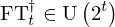

Show the Proof¶
In [1]:
import proveit
# Automation is not needed when only showing a stored proof:
proveit.defaults.automation = False # This will speed things up.
proveit.defaults.inline_pngs = False # Makes files smaller.
%show_proof
Out[1]:
| step type | requirements | statement | ||
|---|---|---|---|---|
| 0 | instantiation | 1, 2, 3 | ⊢  | |
 : :  , ,  : :  , ,  : :  | ||||
| 1 | theorem | ⊢  | ||
| proveit.logic.equality.sub_left_side_into | ||||
| 2 | instantiation | 4, 11, 5, 6 | ⊢  | |
 : :  , ,  : :  , ,  : :  | ||||
| 3 | axiom | ⊢  | ||
| proveit.physics.quantum.QPE._Psi_def | ||||
| 4 | theorem | ⊢  | ||
| proveit.physics.quantum.circuits.unitary_gate_operation | ||||
| 5 | instantiation | 7, 11 | ⊢  | |
 : : | ||||
| 6 | instantiation | 8, 9 | ⊢  | |
 : , : ,  : :  | ||||
| 7 | theorem | ⊢  | ||
| proveit.physics.quantum.QFT.invFT_is_unitary | ||||
| 8 | theorem | ⊢  | ||
| proveit.logic.booleans.conjunction.left_from_and | ||||
| 9 | instantiation | 10, 11 | ⊢ | |
 : : | ||||
| 10 | theorem | ⊢  | ||
| proveit.physics.quantum.QPE._psi_t_ket_is_normalized_vec | ||||
| 11 | axiom | ⊢  | ||
| proveit.physics.quantum.QPE._t_in_natural_pos | ||||